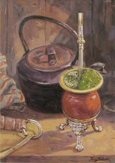

ERVA MATE NA ARTE
A erva-mate funcionou como a base da autoimagem do Paraná, moldando uma identidade cultural única que fundiu o regionalismo com a modernidade europeia. Chamada de "ouro verde", ela financiou a emancipação política do estado e gerou uma estética artística própria entre o final do século XIX e o início do século XX.

MOVIMENTOS
Movimento Paranista (Década de 1920): Liderado por artistas e intelectuais como Alfredo Andersen, Lange de Morretes e Romário Martins, o Paranismo buscou criar uma identidade visual genuinamente local. A folha e os ramos da erva-mate tornaram-se o grande símbolo dessa iconografia, figurando ao lado do pinheiro-do-paraná (Araucaria angustifolia). Artes Decorativas e Arquitetura: Os estilizados motivos estilizados da erva-mate estamparam calçadas de petit-pavé, vitrais, baixos-relevos de edifícios públicos, cerâmicas e capas de livros no início do século XX, transformando a flora nativa em linguagem arquitetônica e gráfica. Pintura e Registro do Trabalho: Artistas pioneiros registraram as etapas de produção matreira — o sapeco, a cancha, o transporte pelos tropeiros e a rotina dos barões do mate. A obra de Alfredo Andersen, considerado o "pai da pintura paranaense", retrata com frequência as paisagens e as dinâmicas sociais vinculadas a essa riqueza. Design de Embalagens e Rótulos: As antigas barricas de madeira e as latas de exportação de mate trouxeram ilustrações ricas em litografia, que hoje são peças valiosas de design histórico e artes gráficas.
A ERVA DE OURO
A erva-mate não forneceu apenas o capital financeiro que financiou a infraestrutura cultural do Paraná (como teatros, escolas de artes e museus), mas também o repertório simbólico que definiu o que é a brasilidade com sotaque sulista na história da arte.

CURIOSIDADES
Curiosidade 1
Voce sabia que o Art Nouveau "Tropical": O design de embalagens e rótulos das antigas latas e barricas de exportação de mate combinava o estilo Art Nouveau europeu com elementos da flora paranaense, criando um estilo gráfico único no início do século XX A "Lenda das Mães": Na literatura e nas artes dramáticas locais, a lenda guarani sobre a origem da erva-mate (a história de Caá-Yari, a deusa protetora das plantas) inspirou diversas peças de teatro, poemas e ilustrações ao longo das gerações. .
Curiosidade 2
Movimento Paranista e o Ramo de Mate Nas décadas de 1920 e 1930, artistas e intelectuais integraram o Movimento Paranista, buscando criar um estilo artístico verdadeiramente regional. O pinheiro, o pinhão e os ramos de erva-mate tornaram-se os elementos estilizados centrais dessa estética. Destaques e Curiosidades Artísticas Design e Art Nouveau: O designer e artista Lange de Morretes aplicou os traços da folha de erva-mate e das fêmeas e machos da planta em estamparistas, relevos arquitetônicos, azulejos e nos icônicos petit-tapis (as pedras portuguesas dos calçadões de Curitiba). Esculturas e Arquitetura: O pintor e escultor João Turin e o arquiteto Frederico Kirchgässner incorporaram motivos folheados a erva-mate em relevos de fachadas e monumentos históricos espalhados pela capital e cidades do interior. Litografia das Embalagens: Durante o auge das exportações, a estamparia das barricas de madeira e das caixas de chá de mate impulsionou as artes gráficas no estado, exigindo ilustrações detalhadas criadas por gravadores locais. Símbolo Oficial: A folha da erva-mate foi incorporada oficialmente ao brasão e à bandeira do estado do Paraná, destacando a conexão permanente entre arte, política e tradição regional .